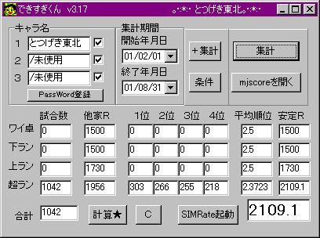
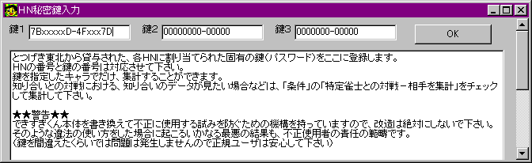

※できすぎくんのシェアウェア販売については、東風荘開発者mjman様から許可を得ています
研究支援のための一部機能無償公開については、「鍵の登録のしかた等」をご覧ください。
フリーウェア版で必ず動作を試す
↓
使用条件許諾をよく読み、シェアウェア版での集計のために必要な「鍵」を購入するかどうか決める
↓
代金を送金する（郵便局で「電信振り替え」または「電信払い込み」で送金します）
↓
totutohoku@hotmail.com←こちらに、振り込んだ人の名前と、使いたいＨＮを誤りなく明記してメールする
↓
とつげき東北が入金を確認し、「鍵」を返信する（およそ１～７日程度かかると思います）
↓
その「鍵」に対応するバージョンの「できすぎくん」をダウンロードする
↓
「鍵」を入力し登録する
↓
できすぎくんを使用する
ＨＮに対応する「鍵」をとつげき東北から買い取ることによって、鍵を指定したキャラでだけ集計することが可能になります。
１度鍵を購入すると、定められた期限までの対戦結果の集計に「できすぎくん」を利用する権利が得られます（これは、使用期間がその期間内に限定されることを意味しません）。
鍵購入者は、その鍵に対応する全てのバージョンアップされたできすぎくんを使用することができます。
とつげき東北は、いかなる事情があっても、できすぎくんをバージョンアップ・バグ訂正しなければならない義務を負うことはありません。何らかのプログラム上の不都合によって万一集計ができなかった場合などにおいてもこれに従います。
特殊な環境においては、集計ができないというバグ報告があります。必ず、フリーウェア版で正しく集計できることを確認してから、シェアウェア版を購入するようにして下さい。
鍵を購入するために、東風荘で使用するＨＮを正確にとつげき東北に知らせる必要があります。
正規ユーザのＨＮは、「正規ユーザリスト」として、とつげき東北のＨＰ上で公開する可能性があります。あらかじめご了承下さい。
とつげき東北は、ユーザに予告なく、できすぎくんの使用に関する取り決めを変更し、あるいは任意のバージョンのできすぎくん公開を停止することができます。
とつげき東北は、鍵の値段をユーザに予告なく変更することができます。例えば、10000円(笑)で購入した鍵が次の日には無料になるということも、理屈上可能です。それを納得した上で、鍵を購入して下さい。
正規に購入された「鍵」以外の鍵を用いて集計を行うことは認めません（これは、友達の鍵で友達のデータを集計することを禁止することを意味しません）。そのような行為に対して、プログラム上でセキュリティーが施されています。またいかなる事情があっても、プログラム本体を書き換えることは固く禁止します。そのような行為に対して、プログラム上でセキュリティーが施されています。とつげき東北に著しい損害を与える可能性のある行為に対して、「できすぎくん」が個人情報の取得を含むいかなる動作を行っても、使用者の責任の範疇にあります（鍵を入力ミスした、ちょっといたずらで別の鍵を試してみる、など、常識的な範疇の使用においてはできすぎくんは安全ですので、正規ユーザは安心してご使用下さい）。
不正使用・正規の使用に関わらず、できすぎくんを使用したことによって生じたいかなる損害に対しても、とつげき東北はその責任を負わないものとします。
現在鍵を購入すると、少なくとも2002年05月31日までの対戦結果を集計することができます。
（これは、その後あらためて鍵の再購入を迫ることを直接意図していませんし、特にその予定もありません）
「できすぎくんの鍵」現在のバージョンはαです。バージョンα鍵に対応したできすぎくんで使用できます。
・値段
鍵１本 500円（１つのＨＮで集計できます）
鍵２本 800円（２つのＨＮで集計できます）
鍵３本 1000円（３つのＨＮで集計できます）
鍵Ｎ本（４本以上） 400＋200Ｎ円
・支払い方法
郵便局で以下に、電信振替（自分の通帳からお金を移動）または電信払い込み（お金を払い込み）します。
電信払い込み（郵便局にある機械）を使えば、窓口でのトラブル等もなく、現金で手軽に払い込みできるので、電信払い込みを推奨します。
郵便貯金 通帳記号 14360 通帳番号 12455631
記号・番号は間違えないように注意して下さい（間違えると、代金がムダになってしまいます）。
払い込む人の本名がわかる名前で払い込んで下さい。
払い込みをしたら、登録したいＨＮと、払い込みした時に書いた名前を明記してメールで連絡して下さい。
なお、窓口で払い込みを行う場合、局によっては相手の本名を伝える必要があります。メールしていただければ教えますが、電信払い込みを利用すれば面倒は一切ありません。
・注意事項
できすぎくんが正常に動作しないようなバグも含めて、いかなる事情があっても、振り込まれたお金は返金できません。
鍵は返品できません。ご注意下さい。
・寄付
寄付も受け付けます(爆)。できすぎくん開発するためのツールだけでも６万円以上かかってますのでゞ（´▽｀；）
フリーウェア版は今後、基本的にバージョンアップしません。
「システマティック麻雀研究室」の高度な研究機能や、リーチの詳細データ（待ちの良さ、相手の待ちの良さ、待ちの良さ別収入・・・）、他家Ｒ分布の表示、自分のＲの分布表示・・・など、シェア版にはフリー版にない様々な機能があり、またそれは今後も増えていく予定です。
シェア版は、フリー版に比較して一般に高速・高機能です。その上実行サイズもフリー版の1/3程度に最適化されています。
一度鍵を購入すると、今後のバージョンアップされたできすぎくんの機能を使用する権利も得られます。

↑ＨＮ入力欄の下に「ＰａｓｓＷｏｒｄ登録」ボタンがついています。これを押すと

このような画面が出てきます。
鍵１のところに一番上のＨＮに対応する鍵を、鍵２には２段目のＨＮに対応する鍵を、鍵３には３段目のＨＮに対応する鍵を入力して下さい（つまり、順番を間違えないようにして下さい）。鍵は保存され、次回起動以降は入力する必要がありません。
鍵を１つだけ購入した場合は、一番上の欄にＨＮを入れ、鍵１に鍵を入れて下さい（別に、２番目以降の鍵の欄に同じ鍵１を入れておいても構いませんが）。
１つ以上、ＨＮに対応する正しい鍵が入力されていれば、集計作業を行うことができるようになります。
もし、１番目のＨＮに対する正しい鍵が鍵１に設定されていて、２番目のＨＮに対する鍵２が間違って入力されていた場合には、集計作業自体は行われますが、２番目のキャラでの試合が結果に反映されません。試合数がどうもおかしい、というような場合には、鍵が正しく入力されているかを確認して下さい。
研究支援のための一部機能の公開
とつげき東北は、個人による麻雀のデータ研究を応援します。
特定個人の集計はできませんが、４人分の平均データや、他家の挙動の研究集計は、正規ユーザＨＮが１つ以上と、それに対応する鍵が１本以上登録されていれば可能です。以下の鍵を用いて下さい。
ハンドルネーム：mjman
鍵：6CAF412-58DF2D2
集計ＨＮの３番目にでも「mjman」を入れ、鍵３に、上の鍵を入力します。
これで、「システマティック麻雀研究室」における「４人分研究」の機能、および、「条件」によって「特定Ｒ傾向を持つ雀士の集計」オプションを選択した場合の集計機能を使うことができるようになります。
本サービスは02/05/24より終了とさせていただきました。